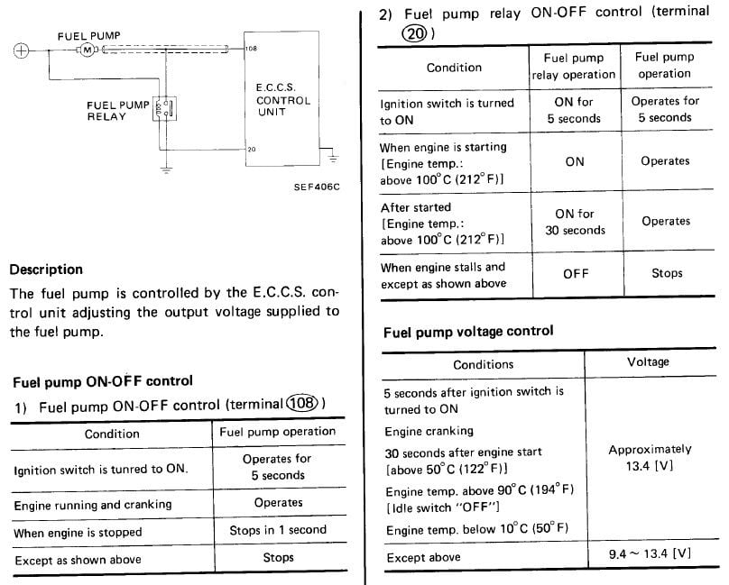
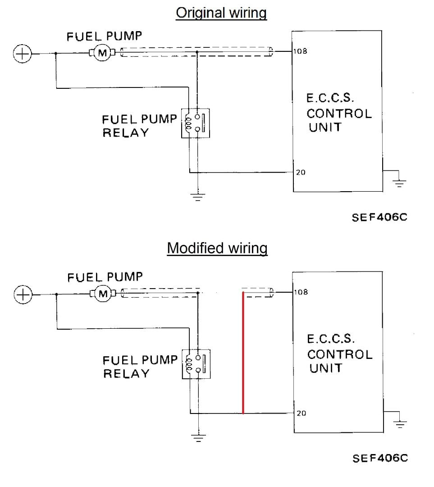

-
My fuel pump will prime when I turn the key to the "On" position, but after the initial prime it will not come on with the engine running. Fuel pressure starts at 40 psi, but bleeds off and the engine eventually stalls. I've tested it by running direct power to the pump, and in that situation the fuel pressure doesn't bleed off and the engine continues to run (but not well).
In addition to testing fuel pressure, I just swapped with a known good ECU, so that's not the problem. Is there a difference in how the fuel pump gets power during the prime cycle versus the normal engine running condition? I've looked at the wiring schematic (EF&EC-9 in my copy of the FSM) but I cannot figure that out. I've looked at this thread which covers re-wiring the pump to bypass voltage control from the ECU… but I don't understand all of it.
There is a timer that must reset before the pump will prime again. I hear the relay click in the engine bay about 5 seconds after I turn the key off. Is that timer/relay circuit keeping the pump from running? Comments in other threads about the fuel pump mention the need to ensure all ground connections are secure and well-bonded, but this seems like something else (since the pump runs in one mode but not the other). I'm still going to check them, but thought I'd see if there are any other things I should check as well.
Suggestions and opinions welcome…'86 NA - original owner (1986-93) and final owner (2005-present)
My build thread: http://z31performance.com/showthread…-Got-mine-back
-
I had a stock 88t once that I had replaced the fuel pump and ECU multiple times in, same issues.
Never found why I couldn't get a constant flow of fuel.
So I created my own fuel circuit from the factory circuit.
You use the factory grounding signal from the pump connector in the back and run a new circuit from the battery.
The factory ground signal is what completes the circuit.
Use an inline fuse from the new battery wire, and you should be set. -
The fuel pump relay activates the pump at ignition on and up to 30 seconds after engine start after which the relay steps out and ground is supplied by pin 108 of the ECU. Hook a tester to the fuel pump ground and check for continuity to pin 108 on the ECU connector.Cha iro
enjoy building it yourself.
if it fails, fuck it.
at least you gave it a whirl. -
After you check the EFI harness for continuity, check the corresponding pin to the white connector all the way to the fuel pump's negative terminal. The problem should be somewhere between the pump terminal and pin 108.Cha iro
enjoy building it yourself.
if it fails, fuck it.
at least you gave it a whirl. -
Thanks… dug deeper into that thread and found the explanation of how the ECU provides ground reference to the pump using the two different paths (pins 20 for the prime and pin 108 for running). I also found the reference to the circuit test procedure in the FSM… it really helps knowing what page to look on, and I've repeatedly found info just by accident. It's not always organized in an intuitive way. What's interesting about the fuel pump circuit test procedure is that there is no "OK" / "N/G" block flow out of the test for pin 108. It just has you check it then move on…
Based on the way it's running, I'm going to guess there's a ground issue from the ECU. While the direct power circuit does get me past the immediate problem, it won't resolve the poor operability.'86 NA - original owner (1986-93) and final owner (2005-present)
My build thread: http://z31performance.com/showthread…-Got-mine-back
-
My relay only stays on about 4-5 seconds for the prime. I did the continuity check from the harness side of the fuel pump connector (black wire not shielded) all the way to the pin 108 connector at the ECU end. Had good continuity…Originally posted by Augustus Maximus View Post
Not sure exactly where this white connector is… the FSM diagram for the circuit shows a connector between the fuel pump and the ECU connector - is that what this is? Since I've got continuity all the way from the ECU to the fuel pump, I think the problem is on the ground for the ECU itself. That ground should be pretty heavy gauge wire since it carries the fuel pump load as well as other current.Originally posted by Augustus Maximus View Post
I also did the FSM test of pin 108 vs. ground with the key on and it showed battery voltage… that's the test I mentioned in my last post… it only has you do the test, then check the fuel pump. All of that testing is on the assumption you've gotten code 22, which I haven't.'86 NA - original owner (1986-93) and final owner (2005-present)
My build thread: http://z31performance.com/showthread…-Got-mine-back
-
Groundy grounds
Answered my own question - yes, that is the one I assumed it was, behind the passenger lower dash…as I said, since it had continuity all the way from the pump to the ECU, I didn't bother.Originally posted by wbnethery3 View Post
On the theory that the ECU ground is somehow the issue (ignoring the fact that when it primes the pump it can find a ground), I did more checking… found one ground wire that wasn't connected… located a "before" picture from when I took the upper intake off for the valve seal replacements and saw clearly where I forgot to reattach it. This is one of the engine grounds in the EFI harness:

Reattached it, but that did not resolve my problem.
Looked around and couldn't find the engine grounds (20F, 36F) where they are depicted in the FSM, but found what I think is one of them in a different place. Or is it the body ground (4F)?
FSM:
Firewall near where the engine grounds (20F, 36F) are supposed to be:
Firewall where the body ground shows to be:
When I replaced the battery cables, I connected the red wire from the negative terminal to the firewall where the factory negative battery cable was connected:
Found three grounds bunched together someplace I don't think they're supposed to be… are these 20F and 36F?… according to the FSM, 36F is the O2 sensor ground and is yellow, so I'm guessing that's it (the black wire cover crossing over the intake just in front of the grounds comes up from the O2 sensor into the harness). Not sure what the other two grounds are, but I'm guessing they should probably be someplace else:
Still not sure a grounding problem by itself is enough to cause this issue… seems like the ECU plays a major role, so may have to try to run a legit direct power circuit instead of what I jury-rigged yesterday. If Alex couldn't figure it out, who am I kidding? It just bugs me because the odds are low that two separate ECU's have the exact same problem (and the replacement ECU was working fine when it was shipped).
Would still like to find the connector on the ECU that carries fuel pump current when running… just to test it to ground. Any suggestions are welcome. I'll noodle over the FSM wiring diagram some more, but I really am having a hard time understanding it since we don't have a circuit diagram of the ECU itself.'86 NA - original owner (1986-93) and final owner (2005-present)
My build thread: http://z31performance.com/showthread…-Got-mine-back
-
Answered my own question again… helps to do your research first, but the guys at Nissan liked spreading the information out through several different areas of the FSM… it's pin 108.Originally posted by wbnethery3 View Post

I tested pin 108 's connection at the fuel pump relay with the key off and it had a good ground.
Here's a diagram that shows what I'm now considering…the full power mod.
'86 NA - original owner (1986-93) and final owner (2005-present)
My build thread: http://z31performance.com/showthread…-Got-mine-back
-
Feeback from the experts indicates that a standalone wiring is a better choice for aftermarket fuel pumps that tend to draw more current than the original did. That option is discussed in a separate thread, so I won't repeat it here.'86 NA - original owner (1986-93) and final owner (2005-present)
My build thread: http://z31performance.com/showthread…-Got-mine-back
-
Just to close out my contribution to this thread… I tried the "modified wiring" shown above, but it didn't work. The same problem that was keeping the pump from running with the stock wiring (pin 108 not providing a path to ground) kept it from pulling in the relay once pin 20 had finished doing its thing… presumably due to something fried inside the ECU. At this point, I will be running a separate wire to ground to activate the relay with "Key on", and separate direct +12V fused power to the pump side of the relay, and direct ground from the relay. That will result in a "key on = pump on" configuration…'86 NA - original owner (1986-93) and final owner (2005-present)
My build thread: http://z31performance.com/showthread…-Got-mine-back
-
How did your search end?

Copyright © 2006–. All rights reserved. Privacy Policy